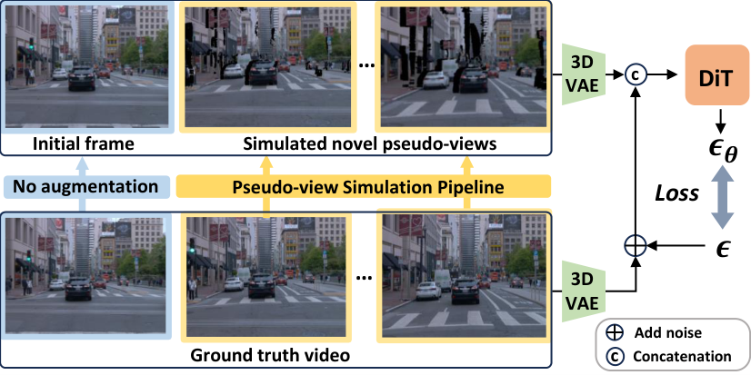

GA-Drive
简单摘要
自由视角、可编辑且高保真的驾驶模拟器对于训练和评估端到端自动驾驶系统至关重要。在本文中，我们提出了 GA-Drive，这是一种新颖的模拟框架，能够通过几何外观解耦和基于扩散的生成沿着用户指定的新颖轨迹生成相机视图。给定沿着记录轨迹捕获的一组图像和相应的场景几何形状，GA-Drive 使用几何信息合成新颖的伪视图。然后使用经过训练的视频扩散模型将这些伪视图转换为逼真的视图。通过这种方式，我们将场景的几何形状和外观解耦。
这种解耦的一个优点是它支持通过最先进的视频到视频编辑技术进行外观编辑，同时保留底层几何形状，从而能够在原始和新颖的轨迹上进行一致的编辑。大量实验表明，GA-Drive 在 NTA-IoU、NTL-IoU 和 FID 分数方面明显优于现有方法。


简而言之，这篇论文关注的核心是：自由视角、可编辑且高保真的驾驶模拟器对于训练和评估端到端自动驾驶系统至关重要。在本文中，我们提出了 GA-Drive，这是一种新颖的模拟框架，能够通过几何外观解耦和基于扩散的生成沿着用户指定的新颖轨迹生成相机视图。给定沿着记录轨迹捕获的一组图像和相应的场景几何形状，GA-Drive 使用几何信息合…
开发具有场景编辑功能的逼真驾驶模拟器对于训练和评估端到端自动驾驶系统至关重要。基于重建的模拟器，例如 PVG 、 OmniRe 和 S3Gaussian ，可以根据记录的轨迹重建驾驶场景。然而，它们只能沿着预先记录的轨迹渲染高质量的视图，限制了它们支持自由视点模拟的能力。 FreeSim 、 DriveDreamer4D 和 ReconDreamer 使用基于扩散的生成模型来合成新颖的视图并从真实图像和合成图像重建 4D 动态场景。
然而，这些方法在组合生成视图和真实视图时通常很难保持视图一致性或保留细节，从而导致重建效果不佳和视觉结果模糊。此外，它们通常缺乏场景编辑的能力。最近的世界模型，例如 DriveDreamer-2 和 MaskGWM，尝试通过生成视频来建模动态场景。然而，与基于重建的方法不同，它们只能以粗略的方式控制相机位姿，并且无法保证 3D 一致性。因此，它们无法支持准确的自由视点模拟。为此，我们提出了 GA‑Drive，这是一种新颖的逼真驾驶模拟器，支持自由视点模拟和通过几何外观解耦和基于扩散的生成进行外观编辑。
我们的主要见解是将几何形状与外观分离。在视点有限的驾驶场景中，RGB 图像无法唯一确定 3D 几何形状。拟合外观会引入漂浮物或扭曲，从而牺牲几何精度，从而在新轨迹上产生明显的伪影。通过分离这些组件，我们使几何模块能够专注于精确的 3D 结构，同时将外观合成委托给扩散模型。我们的几何模块基于 OmniRe（一种 4D 重建方法）构建。我们引入密集深度监督和深度失真正则化以获得更准确的几何形状。为了给扩散模型提供足够的几何和外观线索来生成 3D 一致的新视图，我们利用这种精确的重建来合成新的伪视图，这些伪视图编码正确的 3D 空间关系和遮挡模式。
具体来说，我们将来自目标新姿势的光线投射到重建的 3D 空间中，形成点云，然后将这些点投影到捕获的源视图上以检索它们的颜色。尽管生成的伪视图可能包含孔洞或遮挡区域，但它们可以作为强大的先验指导......
核心创新
综合引言与方法部分，这篇论文的核心创新可以概括为以下几方面：
1）问题定义与研究动机
开发具有场景编辑功能的逼真驾驶模拟器对于训练和评估端到端自动驾驶系统至关重要。基于重建的模拟器，例如 PVG 、 OmniRe 和 S3Gaussian ，可以根据记录的轨迹重建驾驶场景。然而，它们只能沿着预先记录的轨迹渲染高质量的视图，限制了它们支持自由视点模拟的能力。 FreeSim 、 DriveDreamer4D 和 ReconDreamer 使用基于扩散的生成模型来合成新颖的视图并从真实图像和合成图像重建 4D 动态场景。然而，这些方法在组合生成视图和真实视图时通常很难保持视图一致性或保留细节，从而导致重建效果不佳和视觉结果模糊。此外，它们通常缺乏场景编辑的能力。最近的世界模型，例如 DriveDreamer-2 和 MaskGWM，尝试通过生成视频来建模动态场景。然而，与基于重建的方法不同，它们只能以粗略的方式控制相机位姿，并且无法保证 3D 一致性。因此，它们无法支持准确的自由视点模拟。为此，我们提出了 GA‑Drive，这是一种新颖的逼真驾驶模拟器，支持自由视点模拟和通过几何外观解耦和基于扩散的生成进行外观编辑。我们的主要见解是将几何形状与外观分离。在视点有限的驾驶场…
2）方法框架与核心模块
图显示了我们框架的概述。几何模块在 sec:geometry 中介绍。然后，我们在 sec:Pseudo 中描述几何引导伪视图合成，并在 sec:Diffusion 中描述视频扩散模型。最后，用于训练的伪视图模拟管道在第 sec:Training 中详细介绍。 4D 几何重建我们采用 OmniRe（一种高斯场景图表示）作为我们的 4D 重建框架。在现实世界的捕捉中，有限的视角和传感器缺陷意味着仅靠颜色无法唯一确定 3D 几何形状。这种模糊性通常会导致高斯分布重建在拟合观察到的颜色时表现出几何失真，例如浮动高斯。由于我们将几何形状和外观解耦，因此我们的兴趣仅在于驾驶场景的几何结构。因此，我们应用以下两种技术来提高几何精度。密集深度监控 OmniRe 中最初基于 LiDAR 的深度监控本质上是稀疏的，并且由于传感器的限制仅限于视图的下半部分。为了解决这个限制，我们引入了密集的深度监督损失，它可以在缺乏激光雷达观测的区域提供几何指导。这种密集的监督在视点变化有限的场景中尤其重要，其中更大的几何模糊性使得可靠的 3D 几何重建具有挑战性。我们的方法利用 Marigold 来估计每个输入图像的…
3）实验设计与工程价值
外观编辑由于我们的方法将几何形状与外观分开，因此可以通过修改记录的图像轻松执行外观编辑。我们可以利用 SOTA 视频编辑方法，例如 VACE 、 Instruct-V2V 或其他技术来编辑录制图像的外观。一旦记录的图像被更改，由它们生成的所有新轨迹都会自动反映这些变化，因为伪视图直接从编辑的图像中采样颜色。这可确保在任意相机轨迹上进行一致的外观编辑。例如，我们只需使用 Instruct-V2V 提供文本提示即可修改场景中的天气。此外，VACE模型中的mv2v功能允许我们改变汽车的外观。由于强大的视频编辑方法的最新进展，我们的方法可以利用这些工具来实现驾驶场景的多功能编辑。请参阅图 5 来了解展示外观编辑的定性结果。我们还鼓励您查看补充材料以获取更多结果。比较 我们使用与 ReconDreamer 相同的测试数据集（选自 Waymo 验证集）进行所有实验。补充材料中提供了具体的场景 ID…
技术细节
下面按照论文的方法章节结构展开，重点说明模型的关键模块、公式设计和训练策略。
图显示了我们框架的概述。几何模块在 sec:geometry 中介绍。然后，我们在 sec:Pseudo 中描述几何引导伪视图合成，并在 sec:Diffusion 中描述视频扩散模型。最后，用于训练的伪视图模拟管道在第 sec:Training 中详细介绍。 4D 几何重建我们采用 OmniRe（一种高斯场景图表示）作为我们的 4D 重建框架。在现实世界的捕捉中，有限的视角和传感器缺陷意味着仅靠颜色无法唯一确定 3D 几何形状。这种模糊性通常会导致高斯分布重建在拟合观察到的颜色时表现出几何失真，例如浮动高斯。由于我们将几何形状和外观解耦，因此我们的兴趣仅在于驾驶场景的几何结构。因此，我们应用以下两种技术来提高几何精度。密集深度监控 OmniRe 中最初基于 LiDAR 的深度监控本质上是稀疏的，并且由于传感器的限制仅限于视图的下半部分。为了解决这个限制，我们引入了密集的深度监督损失，它可以在缺乏激光雷达观测的区域提供几何指导。这种密集的监督在视点变化有限的场景中尤其重要，其中更大的几何模糊性使得可靠的 3D 几何重建具有挑战性。我们的方法利用 Marigold 来估计每个输入图像的相对深度图。然后，我们通过将 LiDAR 点云投影到图像平面上，将这些估计值与绝对比例对齐，从而在投影像素处获得稀疏但准确的深度值。估计线性变换（缩放和平移）以最小化重叠位置处的相对深度和绝对 LiDAR 深度之间的均方误差。损失测量对齐深度估计和高斯场渲染深度之间的 L1 距离。这种密集的监督提供了整个图像的几何约束，显着提高了无法直接激光雷达覆盖的重建质量。补充材料中提供了进一步的实施细节。深度畸变正则化我们进一步结合了 Mip-nerf 360 提出的深度畸变损失，它通过最小化射线-splat 交叉点之间的距离来鼓励沿每条射线的权重分布更加集中。由于这种损失，高斯被鼓励在场景表面周围更紧密地聚集，避免形成浮动高斯。
请参阅补充材料，了解我们如何在不修改原始 OmniRe CUDA 代码的情况下将深度失真正则化实现到 OmniRe 主干中。几何引导的伪视图合成给定驾驶场景的 4D 重建，我们根据像素的深度（从 4D 重建得出）将光线从每个像素投射到 3D 空间中。在特定的时间戳，假设我们可以访问记录的图像，以及它们相应的相机姿势和从高斯场渲染的深度图。给定目标相机沿着新颖轨迹的姿势，我们的目标是……
$$ \mathbf{x}_w = \mathbf{T}_t \begin{bmatrix} \mathbf{D}_t(u, v)\, \mathbf{K}_t^{-1} \mathbf{p}_{uv} \\ 1 \end{bmatrix}, \quad \mathbf{p}_{uv} = \begin{bmatrix} u \\ v \\ 1 \end{bmatrix} $$
y。我们的目标是合成一个伪视图，该视图近似于目标视点的场景外观。步骤 1：将目标视图深度取消投影到 3D 世界坐标。对于深度为目标图像中的每个像素，我们计算世界空间中相应的 3D 点 -0.25in 对所有像素重复以获得…
$$ \label{eq:projection} \begin{split} \mathbf{x}_c^{(i)} &= \mathbf{T}_i^{-1} \begin{bmatrix} \mathbf{x}_w \\ 1 \end{bmatrix}, \\ \mathbf{p}^{(i)} = \mathbf{K}_i \cdot \mathbf{x}_c^{(i)}[:3], &\quad \mathbf{u}^{(i)} = \left( \frac{p_x^{(i)}}{p_z^{(i)}}, \frac{p_y^{(i)}}{p_z^{(i)}} \right). \end{split} $$
1 b 矩阵方程 对所有像素重复以获得一组 3D 点。我们将 3D 点的颜色表示为 。最初，每个点都被涂成黑色；稍后我们将为它们分配特定的颜色。步骤 2：将 3D 点投影到源视图中。每个点都会投影到每个源视图：只有符合该范围的点......
$$ c_{\mathbf{x}_w} = \begin{cases}I_i(\mathbf{u}^{(i)}) & \mbox{if} \left| \mathbf{D}_i(\mathbf{u}^{(i)}) - \mathbf{x}_c^{(i)}[2] \right| < \delta. \\ \mathbf{0} & \mbox{otherwise} \end{cases} \label{eq:sample_color} $$
(i)p_z^(i), p_y^(i)p_z^(i) )。分割方程 仅考虑落在源视图的高度 (H) 和宽度 (W) 范围内的点。步骤 3 中的 -0.1：从记录的视图中采样颜色并检查可见性。我们确定一个点的可见性并使用以下方程对其相应的颜色进行采样......



把全文方法串起来看，这篇论文的逻辑基本都遵循同一条主线：先把输入组织成更容易处理的表示，再通过模型结构和损失函数把这个表示推向目标输出，最后用可视化与数值实验共同证明该设计有效。
实验结论
实验部分主要回答两个问题：第一，方法是否真的优于已有基线；第二，这种优势来自哪一个设计决策。
外观编辑由于我们的方法将几何形状与外观分开，因此可以通过修改记录的图像轻松执行外观编辑。我们可以利用 SOTA 视频编辑方法，例如 VACE 、 Instruct-V2V 或其他技术来编辑录制图像的外观。一旦记录的图像被更改，由它们生成的所有新轨迹都会自动反映这些变化，因为伪视图直接从编辑的图像中采样颜色。这可确保在任意相机轨迹上进行一致的外观编辑。例如，我们只需使用 Instruct-V2V 提供文本提示即可修改场景中的天气。此外，VACE模型中的mv2v功能允许我们改变汽车的外观。由于强大的视频编辑方法的最新进展，我们的方法可以利用这些工具来实现驾驶场景的多功能编辑。请参阅图 5 来了解展示外观编辑的定性结果。我们还鼓励您查看补充材料以获取更多结果。比较 我们使用与 ReconDreamer 相同的测试数据集（选自 Waymo 验证集）进行所有实验。补充材料中提供了具体的场景 ID 和帧编号。定量比较为了评估我们的模型生成高保真新颖轨迹的能力，我们将其与几个最先进的基线进行定量比较：PVG、S3Gaussian、DriveDreamer4D、ReconDreamer 和 Deformable-GS。 DriveDreamer4D 和 ReconDreamer 都有三种实现，使用 PVG、S3Gaussian 和 Deformable-GS 作为其底层场景表示。我们独立报告每个变体的结果。由于 FreeVS 仅生成部分新颖的视图，因此我们仅将其包含在定性比较中。我们采用 DriveDreamer4D 中提出的新轨迹代理 IoU (NTA-IoU) 和新轨迹车道 IoU (NTL-IoU) 指标来评估新视图中车辆和车道边界的空间一致性。此外，我们还计算原始轨迹图像和新颖轨迹图像之间的 Fréchet 起始距离 (FID)，以评估真实感。为了更好地模拟真实的驾驶场景，我们在 40 帧中每帧横向移动 0.1 米的车道变换轨迹上评估方法，产生 4 m 的总横向移动。定量结果显示在 tab:table_comparison 中。我们的方法在 NTA-IoU 和 NTL-IoU 上都获得了最高分数，表明合成可识别且准确定位的车辆和车道边界的卓越能力。
此外，我们的方法产生最低的 FID，与其他基线相比，证明了其在生成逼真图像方面的优势。定性比较 由于 DriveDreamer4D 和 ReconDreamer 尚未发布其模型，...


- 方法在核心指标上的优势与结构设计和训练目标直接相关；
- 消融实验表明，拿掉关键模块后性能与结果质量都有明显回落；
- 论文不仅比较数值，也关注可视化质量、稳定性和泛化能力等更贴近真实使用的信号。
理解评价
GA-Drive：用于自由视点驾驶场景生成的几何外观解耦建模 张浩1*、范略1,2*、王启泰2、李文博3、吴泽欢4、陆乐伟4、张兆祥2†、李宏升1† 1MMLab、香港中文大学 2CASIA 3上海交通大学 4商汤科技研究 图1. GA-Drive 沿移动轨迹生成高质量且新颖的视图。通过将几何图形与外观解耦，我们的方法允许灵活地编辑外观，例如改变汽车的外观和将天气更改为雾，而不影响底层几何图形。红色边界框表明外观编辑在不同轨迹上是一致的。
摘要 自由视角、可编辑、高保真驾驶模拟器对于训练和评估端到端自动驾驶系统至关重要。在本文中，我们提出了 GA-Drive，这是一种新颖的模拟框架，能够通过几何外观解耦和基于扩散的生成沿着用户指定的新颖轨迹生成相机视图。给定沿着记录轨迹捕获的一组图像和相应的场景几何形状，GA-Drive 使用几何信息合成新颖的伪视图。然后使用经过训练的视频扩散模型将这些伪视图转换为 photorealarXiv:2602.20673v2 [cs.CV] 13 Mar 2026 istic 视图。
通过这种方式，我们将场景的几何形状和外观解耦。这种解耦的一个优点是它支持通过最先进的视频到视频编辑技术进行外观编辑，同时保留底层几何形状，从而能够在原始和新颖的轨迹上进行一致的编辑。大量实验表明，GADrive 在 NTA-IoU、NTL-IoU 和 FID 分数方面明显优于现有方法。 1. 简介 开发一个photor
如果把它当成研究参考，建议重点关注三件事：第一，这套方法真正依赖的归纳偏置是什么；第二，实验中真正拉开差距的模块是哪一个；第三，它的局限究竟来自数据、算力还是监督信号本身。
以下相关论文可以作为进一步追踪的入口：